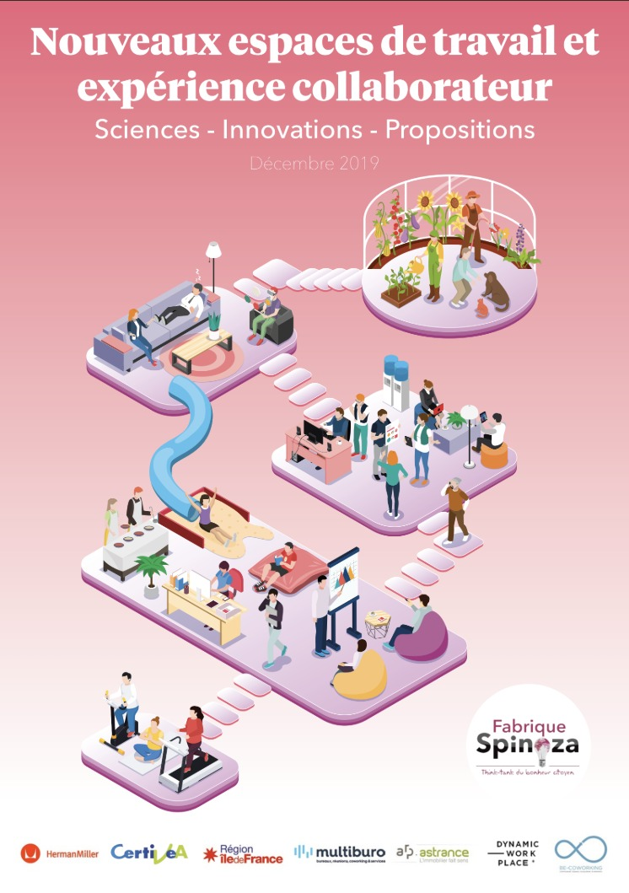

0%
The label
Companies invest in their spaces, but have no tool to measure what really matters: the human experience.
The origin
The workplace has changed profoundly. Flex office, remote work, third places, collaborative spaces… Companies have reinvested massively in their work environments.
Yet one fundamental question remained unanswered: do these spaces really create value for the people who occupy them?
Neither environmental certifications (HQE, WELL, BREEAM) nor traditional satisfaction surveys answered this question. What was missing was a tool that was scientific, participatory and centered on the human experience.

The genesis

Spaces That Matter was co-created with La Fabrique Spinoza, a think tank renowned for its pioneering work on happiness and work in France.
Together, we drew on more than 200 scientific references from neuroscience, environmental psychology, ergonomics, organizational sociology and behavioral economics to create a rigorous, actionable framework.
The result: an employee questionnaire structured around 8 key dimensions that measure the real impact of spaces on people.
A scientific tool serving a human ambition.
Our mission
Measuring what no one measures yet: the real impact of spaces on how employees feel, their engagement and their performance.
A world where every build-out decision is informed by the lived experience of teams, not only by technical or aesthetic criteria.
A framework grounded in scientific research, accessible to companies of all sizes, and centered on employee participation.
Want to know more?
Discover how Spaces That Matter can help your organization measure and improve the human performance of its spaces.